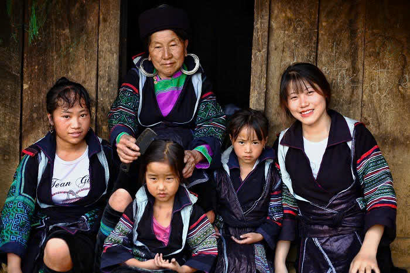

Lịch sử vùng đất Tà Xùa
Tà Xùa là một xã vùng cao thuộc huyện Bắc Yên, tỉnh Sơn La, nằm ở độ cao trung bình khoảng 1.500–1.800m so với mực nước biển. Đây là nơi sinh sống lâu đời của đồng bào dân tộc Mông, gắn liền với lịch sử khai phá núi rừng Tây Bắc từ nhiều thế kỉ trước. Theo tiếng Mông, Tà Xùa (hay Tà Sùa) có nghĩa là "sân phơi thuốc", ám chỉ vùng đất này là nơi phát tích của giống chè Shan Tuyết cổ thụ nổi tiếng.
Từ xa xưa, Tà Xùa là vùng đất hoang sơ, hiểm trở, khí hậu khắc nghiệt, giao thông đi lại khó khăn. Người Mông đã chọn nơi đây để định cư, canh tác nương rẫy, trồng ngô, lúa nương và chè Shan tuyết cổ thụ. Qua nhiều thế hệ, họ hình thành nên bản làng, phong tục tập quán và bản sắc văn hoá riêng biệt, mang đậm hơi thở núi rừng.
Trong thời kì kháng chiến, Tà Xùa cùng các vùng cao Tây Bắc là hậu phương vững chắc, che chở cán bộ cách mạng, góp phần vào sự nghiệp đấu tranh giải phóng dân tộc. Sau hoà bình, vùng đất này dần được quan tâm đầu tư, đời sống người dân từng bước cải thiện. Những năm gần đây, Tà Xùa được biết đến rộng rãi nhờ biển mây hùng vĩ, sống lưng khủng long và rừng nguyên sinh, trở thành điểm du lịch trải nghiệm nổi tiếng. Tuy nhiên, Tà Xùa vẫn giữ được vẻ đẹp hoang sơ và giá trị văn hoá truyền thống – điều làm nên sức hút rất riêng của vùng đất này.
Khám phá nhanh
Chọn chủ đề bạn quan tâm để chuyển trang nhanh hơn.
Vị trí địa lý

- Tà Xùa là một xã vùng cao thuộc huyện Bắc Yên, tỉnh Sơn La, nằm trong khu vực Tây Bắc Việt Nam.
- Khu vực này tọa lạc trên dãy núi cao giáp ranh giữa hai tỉnh Sơn La và Yên Bái, có vị trí địa lí đặc biệt ở vùng núi phía Bắc.
- Tà Xùa có độ cao trung bình khoảng 1.500–1.800 m so với mực nước biển.
- Phía Bắc giáp huyện Trạm Tấu (tỉnh Yên Bái), phía Nam giáp trung tâm huyện Bắc Yên, phía đông giáp xã Suối Tọ, và phía tây giáp xã Xím Vàng, tạo nên ranh giới tự nhiên rõ rệt giữa các khu vực lân cận.
- Được bao bọc bởi các dãy núi cao, bao gồm cả "sống lưng khủng long" nổi tiếng tại độ cao khoảng 1.600m và đỉnh núi cao hơn 2.800m.
- Khoảng cách: Cách trung tâm huyện Bắc Yên hơn 10km, cách thành phố Sơn La khoảng 115-140km và cách Hà Nội khoảng 6-8 giờ di chuyển.